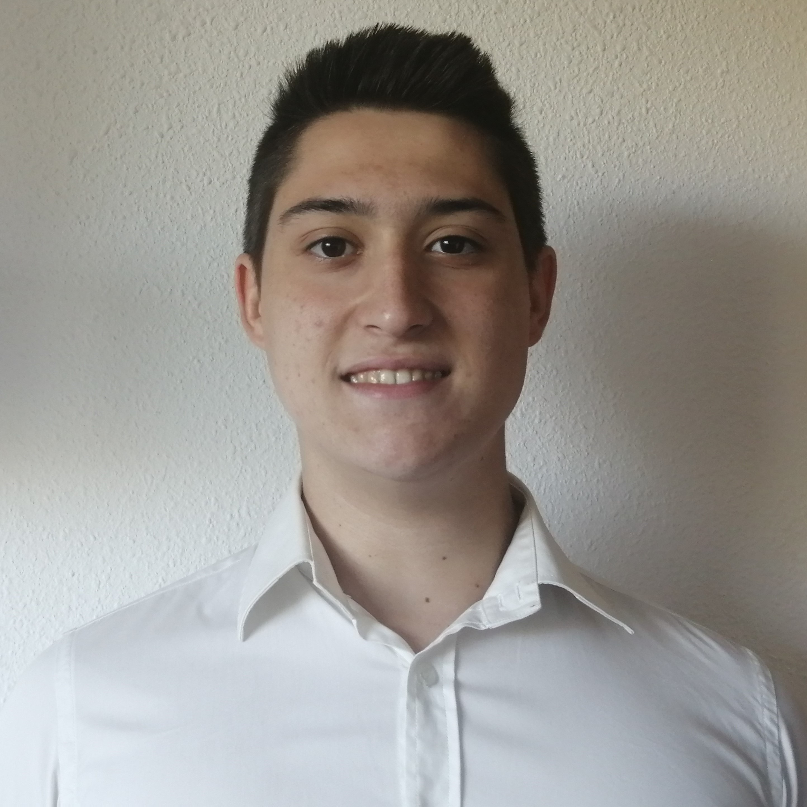

Aitor Ramos Sánchez
Fecha de nacimiento: 12/01/2000
Nacionalidad: Española
Telefono: (+34) 680827733 (Móvil)
Correo electrónico: aitor_ramos.sanchez@yahoo.com
-
Educación y Formación
-
Bachillerato
Instituto de Enseñaza Secundaria Satafi
10/09/2016 - 20/06/2019 Getafe, Madrid.
Campo de Estudio: Ciencias naturales, matematicas y TIC
-
F.C. Grado Superior
Instituto de Enseñanza Secundaria Gabriel García Márquez
12/09/2022 - Actualidad Leganes, Getafe.
campo de Estudio: Diseño y administración de redes y bases de datos.
-
Competencias de Idiomas
-
Lengua materna: Español
-
Otro idioma: Inglés
| Comprensión Auditiva |
Comprensión Lectora |
Producción Oral |
Interacción Oral |
Expresión escrita |
| B1 |
B1 |
B1 |
B1 |
B1 |
-
Competencias Digitales
-
Profesionales
-
Profesionales
-
Información Adicional
-
Más
10/09/2019 - 01/09/2022
Oposición Guardia Civil
-
Permisos de conducción
Permiso de conducción: B